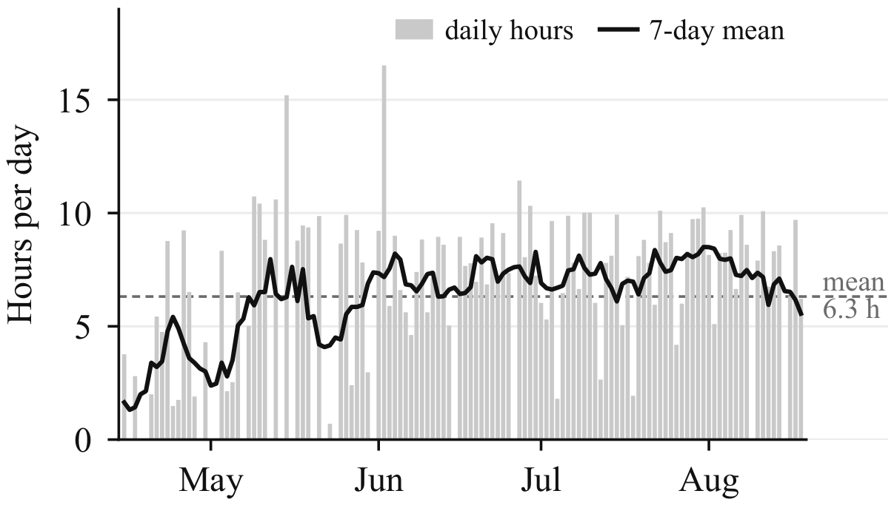
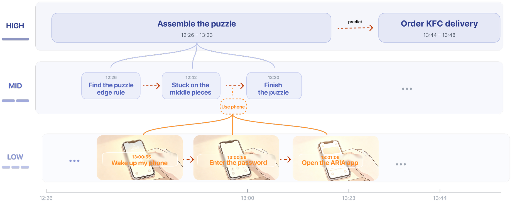
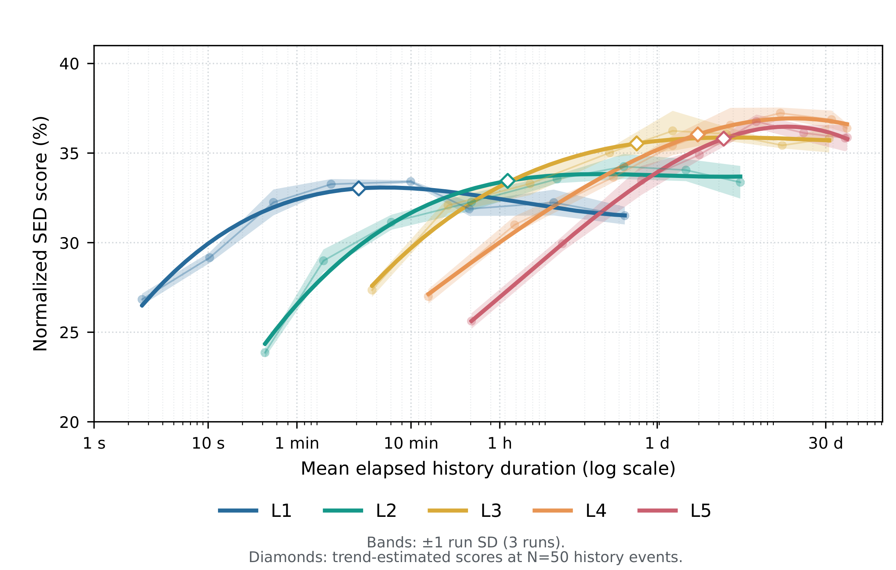
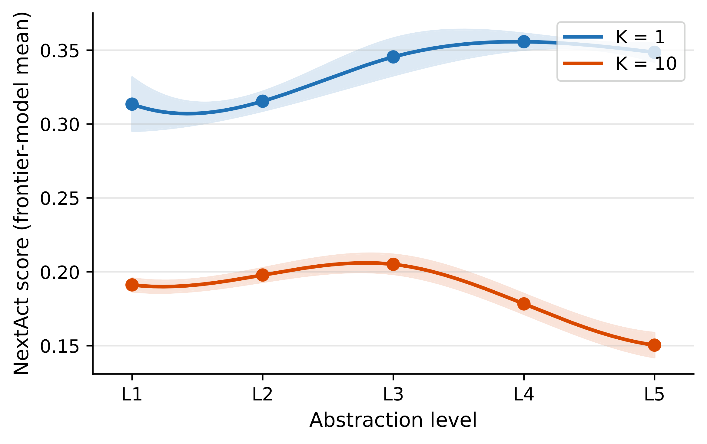

01 / The question
Plans meet real life.
We make ambitious plans all the time: learn the piano, start a workout routine, finish that research project. Actual behavior rarely follows the script. We get distracted, change priorities, and fall back into familiar routines.
Hindsight is remarkably useful. Looking back, we can often see where our plans diverged from what we actually did. But hindsight arrives after the fact. What if a system could preview plausible paths before you commit, based on your own history?
That is the question behind NextMe-800: not what a generic person might do, but what this person might do next, given the patterns of their life.
02 / One life, observed over time
795.5 hours.
126 calendar days.
To study personal behavior, we need temporal depth within one person. NextMe-800 records 1 Hz first-person RGB, gaze, and audio across four months, from research and meals to travel and rare encounters.

Ego4D includes 931 participants but averages about 3.9 recorded hours per person. EgoLife follows six people for seven days. NextMe-800 complements that breadth with months of dense observation of one person.
Its scenes range from coding, study, meals, exercise, dating, and social time to dolphins, karst landscapes, and robotic dogs. This is a curated view of habitual activities and uncommon events, not an unbiased sample of their frequency.
03 / From pixels to behavior
Zoom out without losing the moment.
A three-hour study session contains thousands of atomic actions: editing code, checking a phone, adjusting the air conditioner. Thirty-second video windows become first-person captions; a five-level hierarchy then groups them by shared goals.

428× fewer events from L1 to L5. Each step removes detail while preserving a broader goal.
One recording, three resolutions.
A 3 h 37 min recording, from major activity to atomic detail.
| L5 2 events | L2 178 events | L1 2,287 events |
|---|---|---|
| 3 h 31 min I work on RL homework | … earlier tasks … | |
I compute target Q-values | I edit … I scratch my nose I glance at my phone | |
| … | … | |
I chat on WeChat | I open a WeChat notification … | |
I browse video recommendations | I view video recommendation cards … | |
I adjust the AC | I activate AC display I increase temp. to 26°C | |
| … later tasks … | ||
Table 6 · One major activity contains many tasks; each task contains finer actions.
L1 keeps the nose-scratch and phone glance. L5 turns thousands of details into a few major activities. Neither scale is intrinsically best: the right level depends on whether the forecast concerns a moment or the rest of an afternoon.
At each level, the hierarchy abstracts adjacent events sharing a goal. It does not simply cut the day into fixed-duration blocks.
04 / Measuring an open-ended future
What counts as a match?
Suppose the recorded action is “I grab a bottle of cola from the fridge,” while a prediction says “I pick up a glass of water from the table.” Exact word overlap misses some meaning; a loose semantic score may overlook the changed action and object.
Embedding similarity
Qwen3-Embedding-8B compares the meaning of two atomic actions, including their core verbs and objects.
Semantic edit distance
Soft edit distance (SED) aligns whole trajectories. A substitution costs 1 − embedding cosine similarity; insertions and deletions cost 1. The sequence score is normalized against chance.
| Method | Pairwise ↑ | Spread H₁₀ ↑ |
|---|---|---|
| Semantic models | ||
| Qwen3-Reranker-8B | 0.9417 | 0.6429 |
| Qwen3-Embedding-8B | 0.9290 | 0.9724 |
| Language-model judges | ||
| Gemini-3.7-Flash | 0.9097 | 0.9407 |
| GPT-5.6 | 0.8968 | 0.9113 |
| Claude-Haiku-4.5 | 0.8952 | 0.9612 |
| Qwen3.5-Flash | 0.8794 | 0.8852 |
| Classic text metrics | ||
| BERTScore | 0.8269 | 0.5435 |
| ROUGE-L | 0.7698 | 0.8037 |
| BLEU | 0.6916 | 0.2878 |
The reranker agrees slightly more often with people but clusters many scores at the extremes. Embeddings preserve graded differences for SED. H₁₀ measures score spread, not correctness; these are semantic scores, not classification accuracy.
05 / How much history?
More memories don't always help.
Can in-context learning keep scaling when it sees more of one person's history? We vary the context from 1 to 3,000 recent events and ask how the model's semantic prediction score changes. Fine-grained scores rise quickly, then plateau or decline; coarser activities benefit from longer context, but eventually saturate too.

Fine atomic actions often depend most on the last few minutes. Broader activities can draw on patterns that unfold over days. The graph suggests different useful horizons at different levels, not a universal context length.
A 50-event window lies in or near a strong range for the paper's in-context experiments, so it is used in the main benchmark. It is a practical default, not proof that 50 is optimal for every situation.
06 / The benchmark
Can a model anticipate you?
NextAct combines 1,000 points from NextMe-800 with 500 from six EgoLife participants. Given 50 recent events, learned predictors generate three candidate trajectories for the next one or ten recorded events. The reported score selects the best match to the ground truth, a generous best-of-three evaluation.
Gemini 3.1 Pro
| Predictor | L1 | L2 | L3 | L4 | L5 | Mean |
|---|
Frontier models cluster around 0.32–0.34 for the next event, above the repeat-recent baseline of 0.1916. For ten events, the best score is 0.1943. These are normalized semantic sequence scores, not percentages of exactly correct actions.
Codex + DeepSeek can retrieve history beyond the 50-event window, yet does not lead the reported mean at either horizon. Access to more past activity is different from knowing which past activity matters now.
Recorded: “I read the Feishu document notes.”
Predicted: “I read the Feishu reflection notes.”
Recorded: “I walk away from the table.”
Predicted: “I write mathematical formulas on the notepad.”
It follows the shape of the day.
- Pack belongings
- Travel to the library
- Study at the library
- Attend a lecture
- Meet a companion for a meal
- Pack study materials
- Travel to the library
- Study at the library
- Attend a lecture
- Return home for dinner
Five editorially condensed milestones from the ten-step appendix example. The first four stages broadly align; the meal location and company do not. The reported 0.49 is for all ten actions, not these five summaries.
Examples come from the preprint appendix. The benchmark gives target recording windows; events during unobserved gaps are not treated as known behavior.
07 / The most useful scale
The middle is easier to foresee.
Atomic actions are noisy. Major activities are farther apart. Between those extremes, the hierarchy finds a more predictable scale.

At K=1, the reported average rises toward L3–L4 (roughly 7.5–24 minutes per event) before a small decline at L5. The hierarchy removes incidental detail without yet losing all continuity.
At K=10, the peak is more clearly L3. Ten L5 events span 5.8 hours on average: by then, even an accurate sense of the person's routine may not identify the turns their day will take.
What comes next
So why does any of this matter?
Imagine a future where everyone has a digital twin. Before each day begins, we could explore a tree of possible futures — multiple trajectories of how we might actually behave — and choose the path we most want to live. By turning hindsight into foresight, personal behavioral prediction could help us make better choices, reduce regret, and face the future with greater clarity.
A forecast beside a recorded day
What would a preview change?
Open a choice. Drag to explore. Zoom out to see the whole day.
NextMe-800